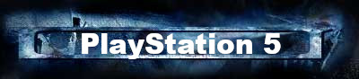
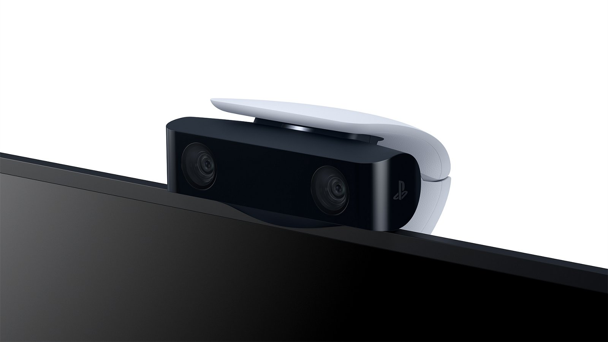

 |
Окажитесь в центре игрового процесса и поделитесь им благодаря HD-камере для PS5.
HD-камера с двойным объективом и встроенной подставкой поддерживает захват изображения 1080p и идеально сочетается с инструментами в консоли PS5 для удаления фона, с помощью которых вы легко окажетесь в центре внимания.
Записывайте плавное и четкое видео в формате Full HD с помощью двойного широкоугольного объектива камеры, чтобы не пропустить самые захватывающие моменты игры. Быстро создавайте записи или включайте трансляцию своего игрового процесса с помощью кнопки создания на беспроводном контроллере DualSense.
Получайте идеальную картинку благодаря встроенной регулируемой подставке HD-камеры. Благодаря компактной конструкции камеру можно установить над телевизором или под ним и настроить угол съемки в зависимости от требований.
Окажитесь в центре игрового процесса на ваших видео благодаря инструментам удаления фона в консоли PlayStation®5.
С помощью HD-камеры вы можете добавлять изображение с собой в игровые видео во время трансляций, используя режим «картинка в картинке», обрезку фона или его замену благодаря зеленому фону.
Find yourself in the center of the gameplay and share it thanks to the HD camera for PS5.
Get the perfect picture thanks to the built-in adjustable HD camera stand. Thanks to its compact design, the camera can be mounted above or below the TV and adjust the shooting angle depending on the requirements.
Find yourself in the center of the gameplay on your videos thanks to the background removal tools in the PlayStation ® 5 console.
With the help of an HD camera, you can add an image with you to game videos during broadcasts using the picture-in-picture mode, cropping the background or replacing it with a green background.